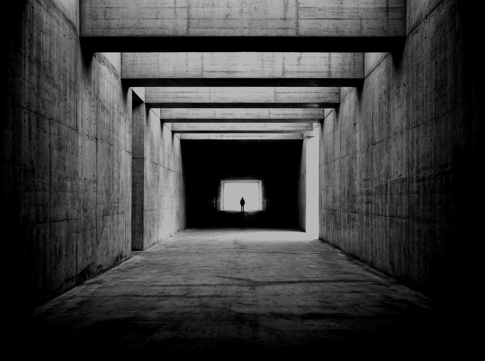

01 / Studio concept
A brighter
tomorrow.
A visual identity for a clean-energy brand built around the idea of moving forward, one frame at a time.
Explore the identity
Identity system
Structure
with intent.
Repeating frames give the identity a recognisable shape. A bright solar accent marks the way through.
Primary wordmarkSolarium
- Solar #E3FA58
- Graphite #1B211E
- Paper #F3F2E8
Brand applications
On paper.
The frame pulls the reader into the report. On the poster, it becomes a path through the message.
SolariumEnergy
outlook. Concept report / 01
outlook. Concept report / 01
SolariumStep into
the light. A brighter tomorrow.
the light. A brighter tomorrow.